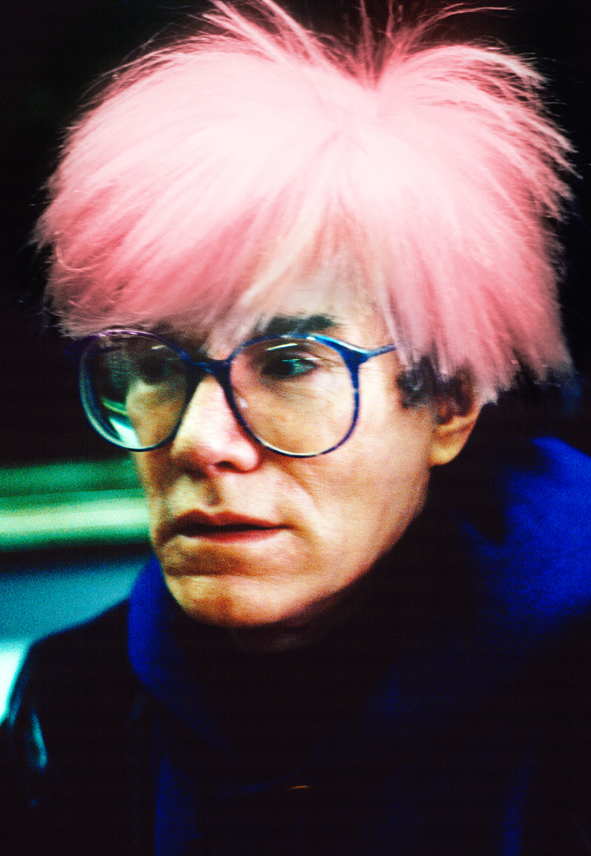
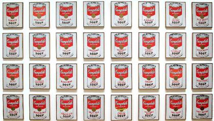
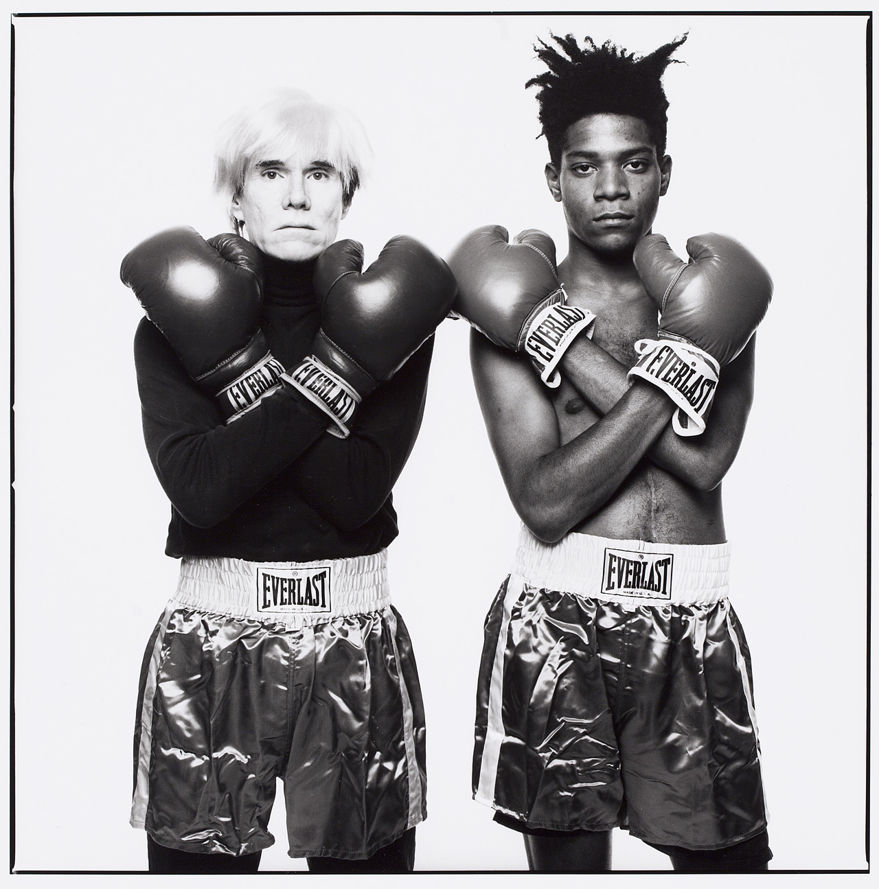

Andy Warhol was a leading artist in the pop art movement. His works explore the relationship between artistic expression, celebrity culture, and advertisement that flourished by the 1960s. After a successful career as a commercial illustrator, Warhol became a renowned and sometimes controversial artist.
Andy Warhol challenged what art truly was. This is reflected within his screen prints and subject matter
Andy Warhol mentored the young haitian artist Basquiat
